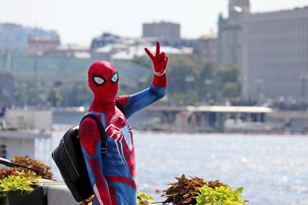

Your Friendly Neighborhood Hero
Name: Peter Parker (don't tell anyone)
Alias: Spider-Man
Occupation: Student by day, superhero by… also day
Location: New York City
contact: spiderman@avengers.com
|
 |
Hi! I'm Spider-Man. I climb walls, swing through traffic (not recommended),
and deal with villains who seriously need better hobbies.I believe in doing the right thing, helping people, and making sure every fight includes at least one bad joke.Currently starting fresh—because every hero deserves a brand new day. |
2016 - Present